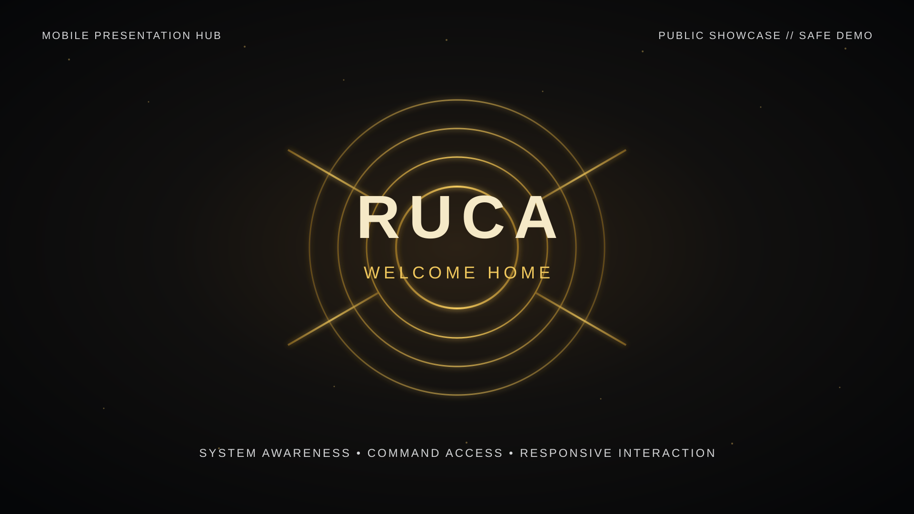
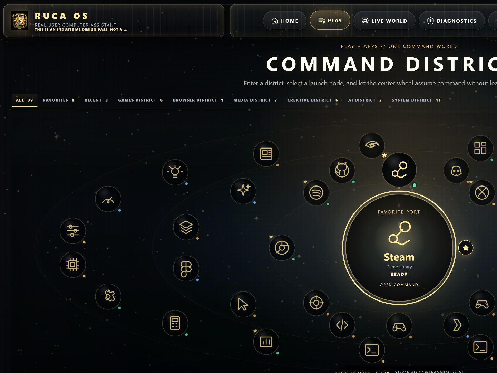
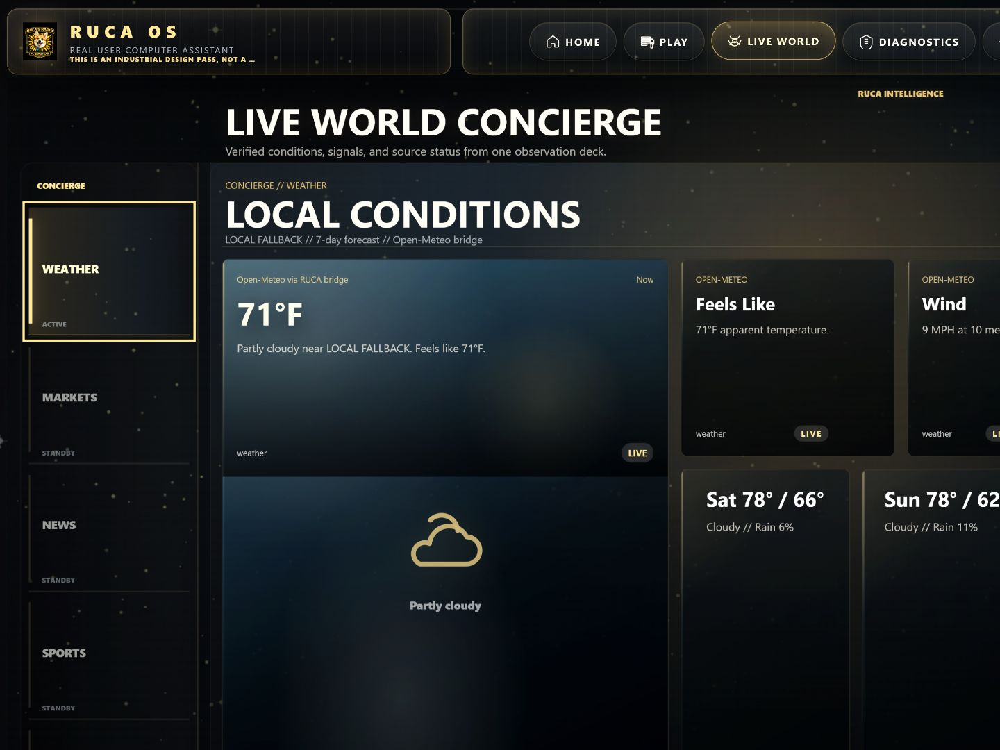
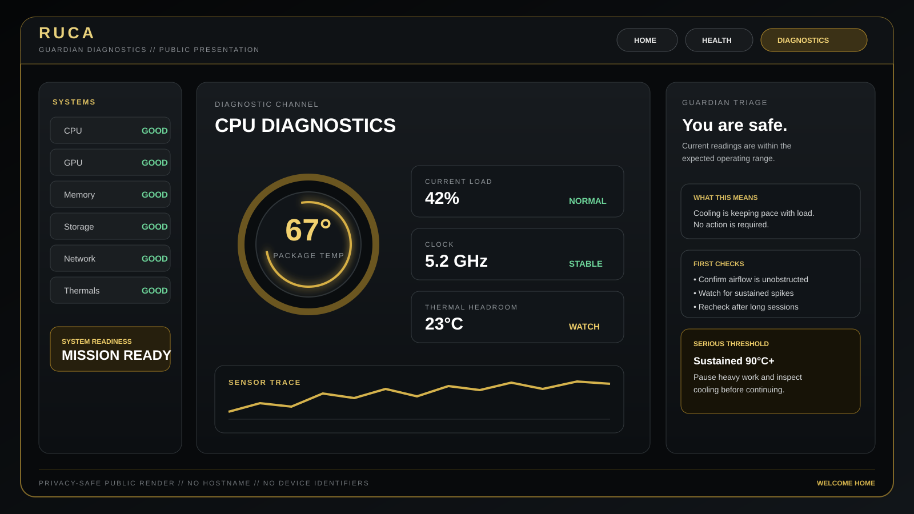
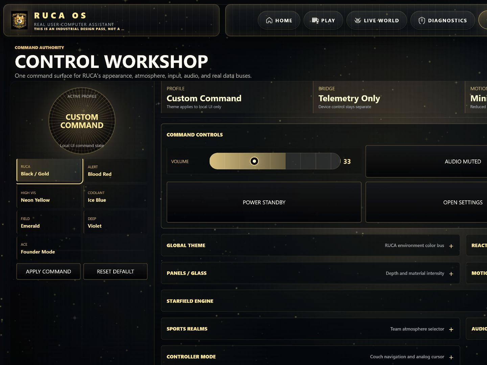

Actual design evidence
The screens above come from the strongest public RUCA product assets, not a miniature substitute interface.
RUCA restores the arrival ritual console players lose when they move to PC, without sacrificing the power, truth, and flexibility that made the move worthwhile.

Windows gives gamers access. RUCA gives the machine a sense of arrival, readiness, place, and protection.
This is a visual product showcase built from the strongest public RUCA design evidence. It does not pretend that a stripped-down browser toy is the full operating environment.
The System Heart compresses machine readiness into one immediate read. Six surrounding gauges provide truthful context without turning HOME into a wall of monitoring software.
PLAY turns games, launchers, media, creative tools, AI, browsers, and system utilities into one spatial command registry instead of another grid of shortcuts.

Weather, markets, news, sports, and technology become one designed observation world with a shared visual language, source truth, and clear states for live, partial, stale, retrying, and unavailable data.

Guardian turns sensor readings into plain-language severity, meaning, first checks, reassurance, thresholds, and next actions while keeping raw technical detail available underneath.

CONTROL organizes atmosphere, appearance, input, audio, sources, and authority around clear ownership and progressive disclosure instead of exposing disconnected toggles.

The screens above come from the strongest public RUCA product assets, not a miniature substitute interface.
RUCA Command Core remains an evolving desktop operating environment and interaction-design system.
The public presentation does not expose workstation telemetry, files, credentials, native controls, or the private runtime.